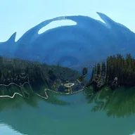

Ondulación circular

Hace que ondas circulares se expandan desde un punto, como una gota al caer al agua.
Ajustes
| Ajuste | Tipo | Rango | Predeterminado |
|---|---|---|---|
| Centro | Punto (X, Y) | -1 a 2 | 0.5, 0.5 |
| Frecuencia | Número | 0 a 100 | 20 |
| Intensidad | Número | -1 a 1 | 0.03 |
| Fase | Número | -1000 a 1000 | 0 |
| Radio | Número | 0 a 0.8 | 0.3 |
| Difuminado | Número | 0 a 1 | 0.1 |